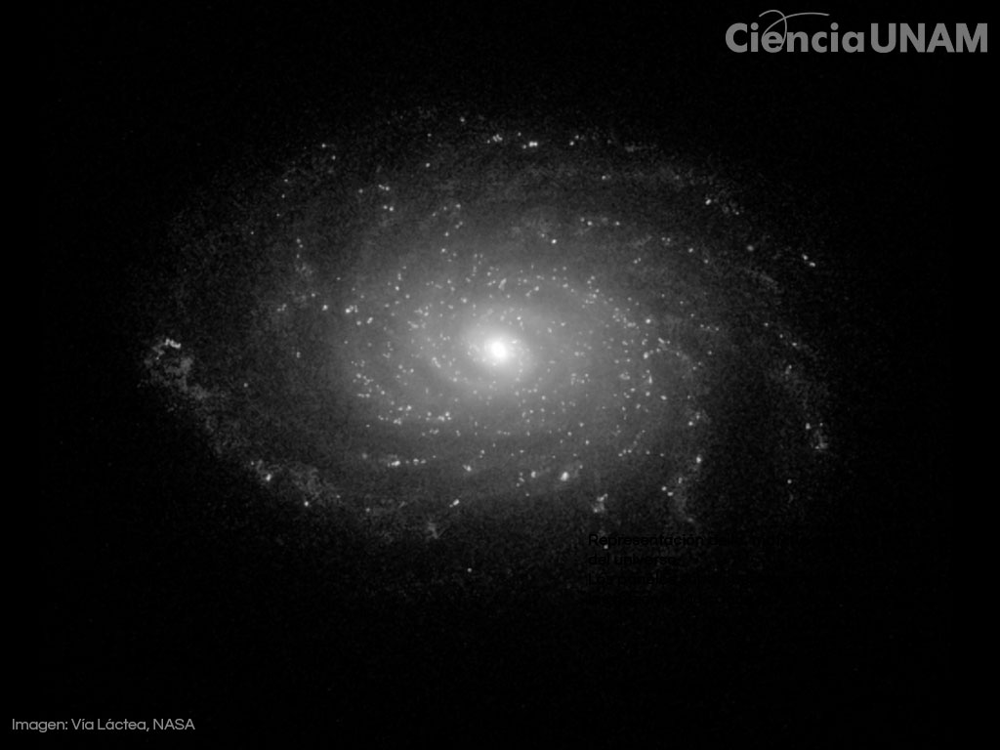
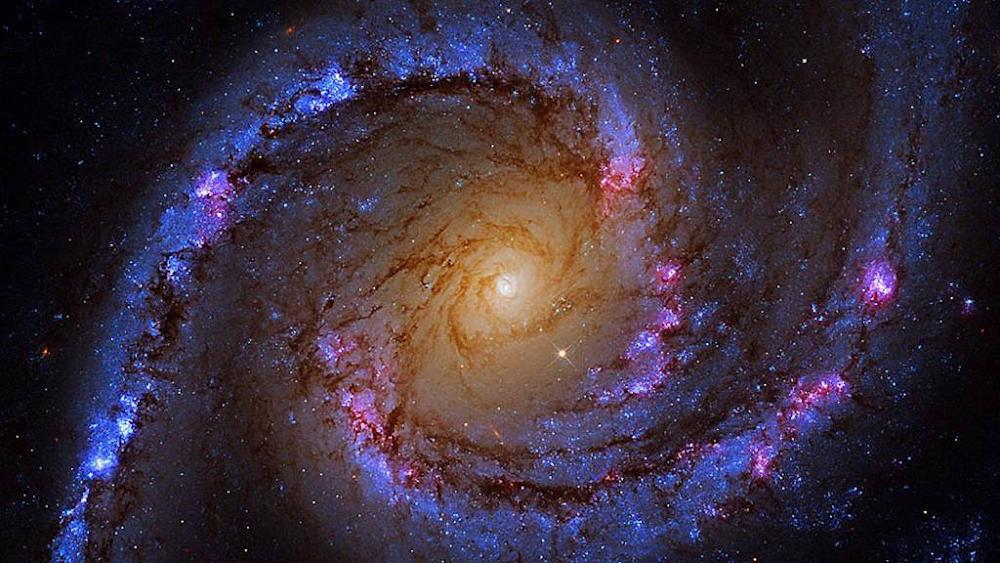

Todo lo que podemos ver, tocar y medir con telescopios representa solo una diminuta fracción de la realidad cósmica. Explora las fuerzas que dominan el espacio.
Empezar ExploraciónEs una forma de materia que no emite, absorbe ni refleja luz, lo que la hace completamente invisible para nuestros instrumentos tradicionales.
¿Para qué sirve? Actúa como un "andamiaje" o pegamento gravitacional invisible que mantiene unidas a las galaxias. Sin ella, las galaxias girarían tan rápido que saldrían despedidas y se desintegrarían.

Es una fuerza misteriosa y homogénea que llena todo el espacio y ejerce una presión que repele la gravedad a gran escala.
¿Para qué sirve? Es la responsable directa de la aceleración de la expansión del universo. En lugar de frenarse por la gravedad, el tejido del espacio se estira cada vez más rápido.

El astrofísico Fritz Zwicky nota que las galaxias en el Cúmulo de Coma se mueven demasiado rápido. Propone por primera vez la existencia de una "materia oscura" invisible que aporta la gravedad necesaria.
La astrónoma Vera Rubin analiza la rotación de las galaxias espirales y demuestra definitivamente que hay mucha más masa oculta de la que podemos ver en forma de estrellas.
Dos equipos de científicos miden la luz de supernovas lejanas y descubren con asombro que la expansión del universo se está acelerando, impulsada por una fuerza desconocida: la Energía Oscura.
Ajusta los valores para observar el balance real de nuestro universo comparado con otros modelos hipotéticos.
Aunque comparten la palabra "oscura" (que significa que no sabemos con exactitud qué son), operan como fuerzas opuestas. La Materia Oscura atrae las cosas mediante gravedad a nivel local (galaxias), mientras que la Energía Oscura empuja el espacio hacia afuera a nivel global.
Comprender estos fenómenos definirá el destino final de nuestro universo. Dependiendo de cómo se comporte la energía oscura, el universo podría expandirse para siempre hasta enfriarse por completo (Big Freeze) o desgarrarse a sí mismo (Big Rip).
Sabemos que están ahí por sus efectos indirectos. Vemos el efecto gravitacional de la materia oscura en la velocidad de las estrellas, y medimos la aceleración del espacio a través de la luz de supernovas lejanas y el fondo cósmico de microondas.